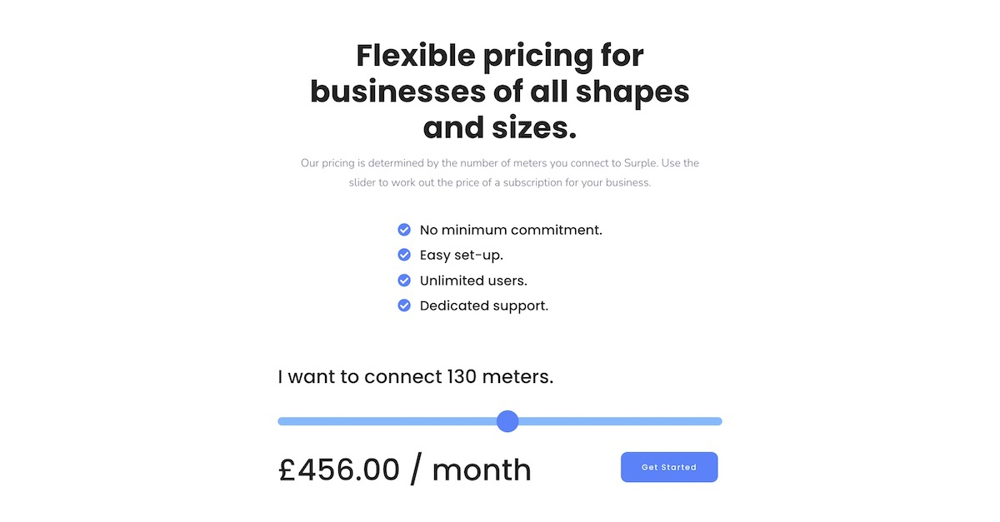
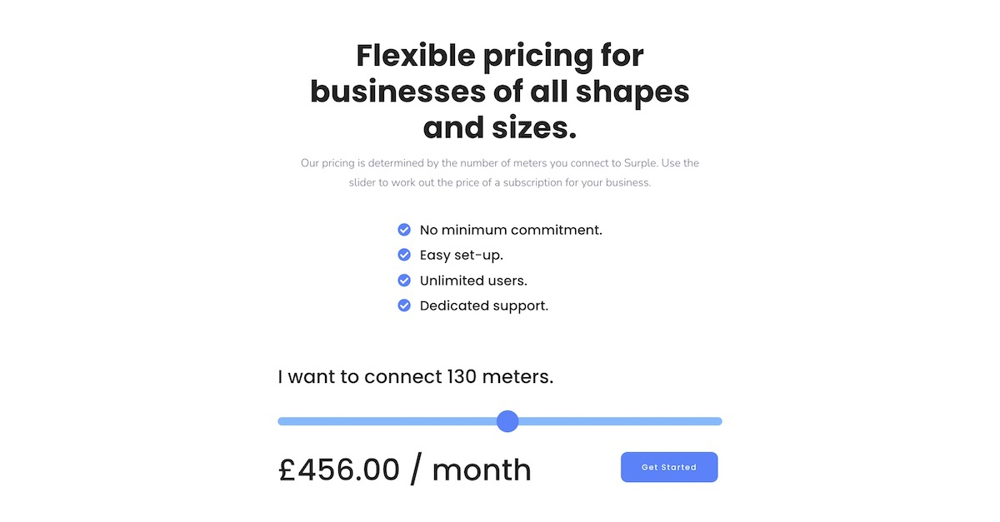

Some of my favourite projects.
Surple Platform
Surple is an energy management platform that helps businesses to understand their energy use, identify issues and save money and carbon. As well as being a co-founder of Surple, I was also one of the principle developers working on the product.
Technologies

Surple Website
I created the Surple website to show off the product and to help generate inbound leads. The website has loads of functionality such as a blog, the ability to book a demo and the option to subscribe to the newsletter.
Technologies
 

MPAN Scanner
MPAN stands for Meter Point Administration Number. MPANs are used in the energy industry to identify electricity meters. This MPAN scanner allows energy professionals to check if an MPAN is valid. This can be valuable before attempting to connect the meter to a system like Surple.